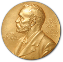

There is a better way.
Say goodbye to prescriptions and side effects.
Say goodbye to prescriptions and side effects.
Nitric Oxide keeps your blood flowing. Without it, blood can't get where it needs to go. Its discovery won the .

1998 · Furchgott, Ignarro, and Murad
Nitric Oxide tells your blood vessel walls to relax. So blood gets everywhere it should.
By age 40, your Nitric Oxide levels have declined by 50%.
The blue pill doesn’t recharge you. It runs on what’s left.
Leafy greens and beets are rich in dietary nitrates. Your body turns them into Nitric Oxide.
“I recommend Berkeley Life.”
“Our patients are loving the results.”
4.7 Rating

8+
YEARS OF R&D
28,000
ARTICLES ON NITRIC OXIDE
3
CLINICAL TRIALS ON OUR FORMULA
3,000+
HEALTHCARE PROVIDERS